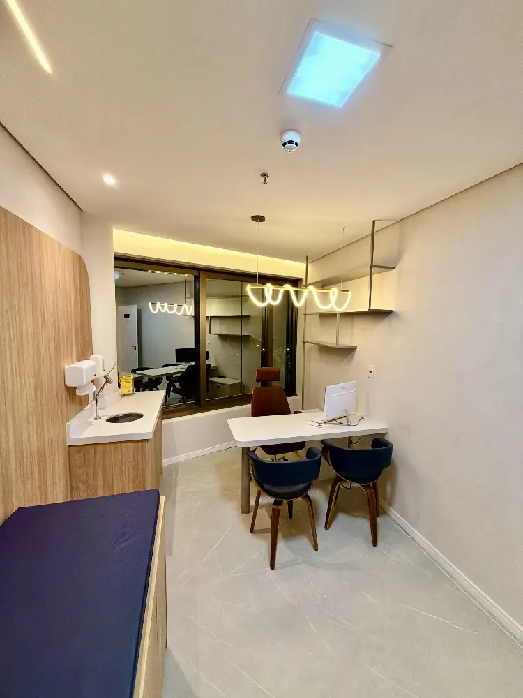
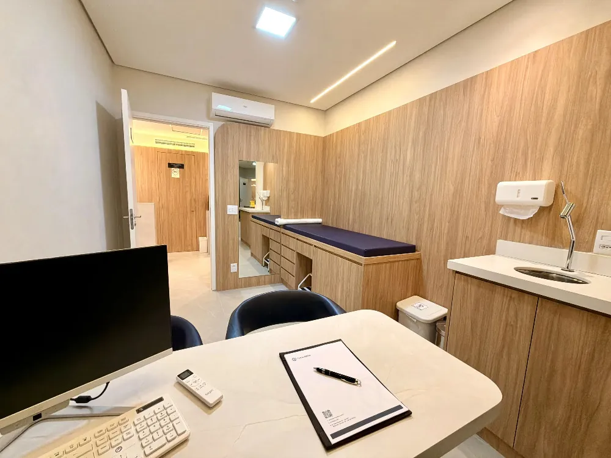

Seu joelho merece um cuidado à altura da sua vida.
Do diagnóstico à recuperação, atenção especializada a cada etapa do seu movimento.

Não existe um único caminho para todos os joelhos.
A indicação começa com a história, o exame clínico e o que faz sentido para você.

Cuidado especializado em cada etapa.
Tratamentos conservadores e cirúrgicos, sempre conforme avaliação e indicação individual.

Artroscopia de joelho
Abordagem minimamente invasiva quando indicada

Reconstrução ligamentar (LCA)
Cuidado para lesões ligamentares

Cirurgia de menisco
Avaliação para preservação meniscal
Prótese de joelho
Planejamento individualizado

Medicina regenerativa
Indicação criteriosa de opções terapêuticas

Bloqueios e infiltrações
Tratamentos para controle da dor
Imagens cirúrgicas ilustrativas. Os ambientes apresentados são fotografias da Ortho Alpha.
Diagnóstico primeiro, tratamento depois.
Entender a origem da dor e suas limitações ajuda a definir o tratamento adequado.
Dois especialistas. Um cuidado pensado para você.
Conheça nossos médicos e suas trajetórias em cirurgia do joelho.
Conhecer equipe ↗

O cuidado começa com uma conversa.
Converse com a equipe sobre agendamento e avaliação médica.